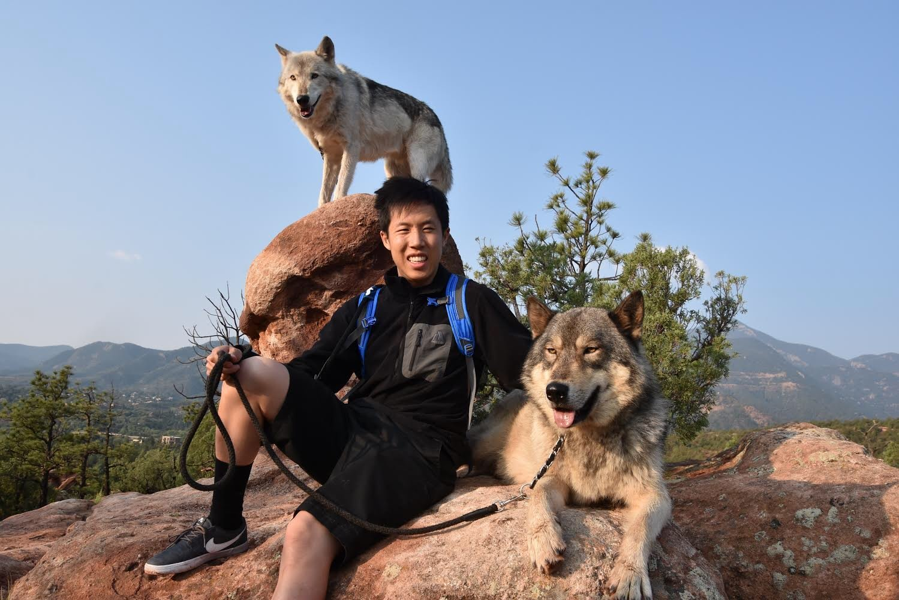
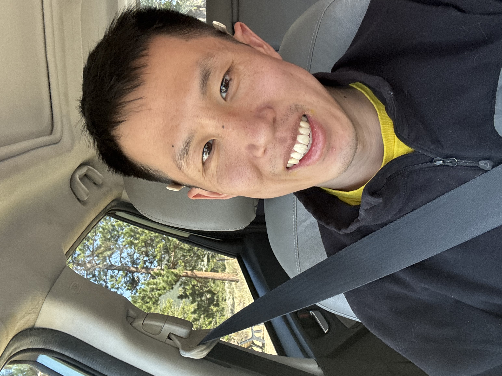

Not here to perform. Here to connect.


The short version
I think before I speak. What I say, I mean. I live deliberately — not because I have it all figured out, but because simplicity is how I cut through the noise.
I'm a former tech worker and school bus driver working toward math teacher certification, building a trauma-aware financial coaching practice along the way. The through-line in all of it: meet people where they actually are. Not where you wish they were.
On simplicity
Not as aesthetic. As a way of living. It's practical, yes — but it also cuts through the anxiety of modern life in a way that I haven't found anywhere else. I don't own much. I don't say much. What I have and what I say tend to matter.
The honest arc
The frame I keep returning to
This question lives in my coaching, my content, my calendar. If I can't answer yes to the first half, I change something. It's not a mantra. It's a practice.
What I'm not
Why this matters for dating
This is what my life actually looks like right now. I'm not between things. I'm in the middle of things — intentionally. If that's compelling to you, keep reading. If it sounds like chaos, that's useful information too.
The honest version
I'm not looking for a project. I'm looking for a teammate. Someone who shows up with their own infrastructure — emotionally, directionally, practically.
I'm not here to convince you. But I'm happy to be interesting.
What I'm actually evaluating
What I'm looking for
these things
not these things
The misunderstood green flag
Most people treat early disagreement as a warning sign. I read it differently. If someone pushes back, holds a preference, or doesn't immediately mold to the shape of what I want — that's signal. It means someone's actually there. I don't just want easy. I want present.
The intake
If you've read this far, you're either the right person or admirably thorough. Either way — these are the questions I actually want answered. No wrong answers. Some answers are more interesting than others.
What's your name, and how did you find this page?
When did you last cry? When did you last laugh hard?
What did you learn from your last relationship — and what would you do differently?
The premise: You and a superintelligent snail both receive $1 million dollars, and you both become immortal. There's one condition: if the snail touches you, you die. It always knows exactly where you are. It moves slowly — but it never stops, never sleeps, and it's coming for you. Forever.
What's your plan? And — what does your answer say about you?
What are you building — in your life, your work, yourself? What's the thing you're in the middle of?
Anything you want me to know that these questions didn't surface?
Email or phone — whichever you'd prefer a reply to.